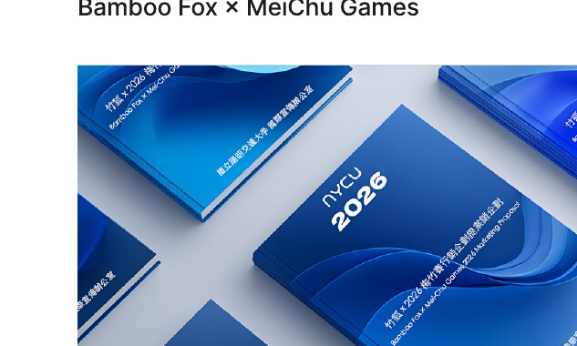
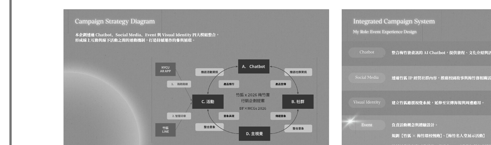
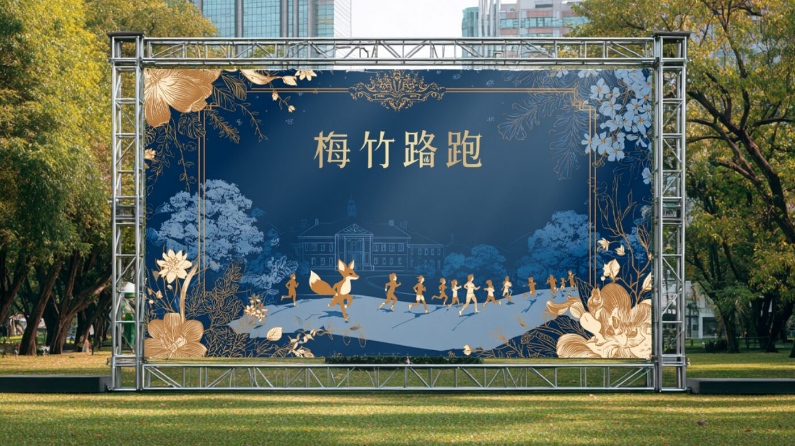
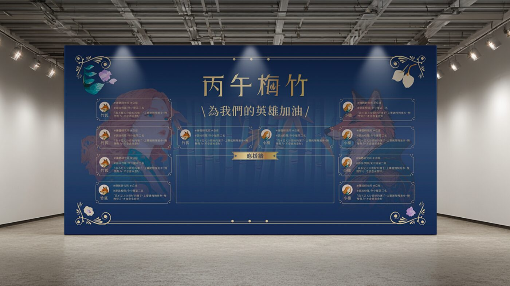

研究洞察
球迷使用者旅程
針對主動型球迷，分析從 Awareness 到 Referral 五個階段的行為、目標與情緒變化，找出資訊分散、現場體驗不足等關鍵痛點，作為概念發展依據。

專案概覽
透過校園吉祥物「竹狐」重新詮釋梅竹賽文化，提出結合數位互動、社群行銷與實體活動的整合行銷提案，將傳統校際賽事轉化為具故事敘事與沉浸體驗的校園文化活動。
My Role: Event Experience Design

行銷策略
本企劃透過 Chatbot、Social Media、Event 與 Visual Identity 四大模組整合，形成線上互動與線下活動之間的連動機制，打造持續運作的參與閉環。我的角色負責 Event 體驗設計，規劃【竹狐 × 梅竹環校視跑】與【梅竹名人堂展示活動】，設計活動流程與互動體驗，整合 AR 互動與智慧印收機制，強化校園歸屬感與賽事氛圍。
研究洞察
針對主動型球迷，分析從 Awareness 到 Referral 五個階段的行為、目標與情緒變化，找出資訊分散、現場體驗不足等關鍵痛點，作為概念發展依據。

受眾輪廓
建立 Persona「吳奇勇」，整理其動機目標、體驗行為、情感變化與痛點，作為團隊溝通與設計決策的共同參考依據。
活動執行

經由校園梅竹賽指標地點進行環校慢跑，透過實際行動引起學生對梅竹賽的關注，提升校園精神認同、歸屬感與凝聚力。

竹狐作為「官方記錄者 × 首席應援團長」，打造賽前、賽中、賽後的「英雄榮耀」故事，提升比賽關注度與延長賽後熱度，強化校園歸屬感、凝聚力，共創梅竹榮耀。